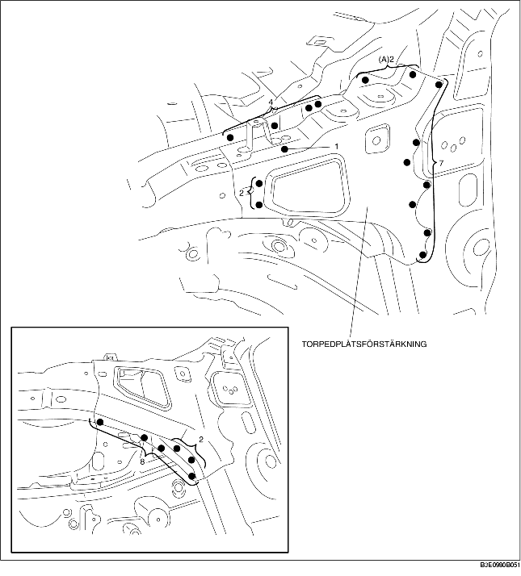

DEMONTERING AV TORPEDPLÅTSFÖRSTÄRKNING
B3E098053290B01
1. Demontera torpedplåtsförstärkningen.
Försiktigt
• Var försiktig så att du inte skadar vindrutan när du borrar på de båda platser som är märkta med (A).
